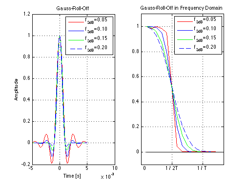

Gaussian Pulse Shaping
Copyright 2007 Telecommunications Lab
Fs = 500000; % Sampling frequency 500000 Hz T = 1/1000; % Symbol time interval [s]. t = -5*T:1/Fs:5*T; % Time vector (sampling intervals) t = t+0.00000001; % Otherwise, the denominator would be zero at t=0 f= 0:1/Fs:2; f3db=0.05; % Gauss-Roll-off factor % Gauss-Roll-Off FIR filter for i=1:4 g(i,:) = (sin(pi*t/T)./(pi*t/T)).*(exp(-(2/log(2))*(pi*f3db*t/T).^2)); f3db=f3db+0.05; end % Plotting subplot(1,2,1);plot(t,g(1,:),'r',t,g(2,:),'b',t,g(3,:),'g',t,g(4,:),'--','LineWidth',1.5);hold on;grid on;xlabel('Time [s]');ylabel('Amplitude'); legend('f_{3dB}=0.05','f_{3dB}=0.10','f_{3dB}=0.15','f_{3dB}=0.20');title('Gauss-Roll-Off'); % Cosine-Roll-Off frequency response f3db = 0.05; for j=1:4 G(j,:)=abs(fft([g(j,:) zeros(1,1024-length(g(j,:)))])); end % Plotting subplot(1,2,2);plot(G(1,:)/max(G(1,:)),'r','LineWidth',1.5);hold on;plot(G(2,:)/max(G(2,:)),'b','LineWidth',1.5);hold on;plot(G(3,:)/max(G(3,:)),'g','LineWidth',1.5);hold on;plot(G(4,:)/max(G(4,:)),'--','LineWidth',1.5); legend('f_{3dB}=0.05','f_{3dB}=0.10','f_{3dB}=0.15','f_{3dB}=0.20');title('Gauss-Roll-Off in Frequency Domain'); hold on; axis([0 16 -.1 1.1]); set(gca,'XTick',[0:6:16]); set(gca,'XTickLabel',[' 0';'1 / 2T';'1 / T ';' ';' ';' ';' ']) f(1:length(G(1,:)))=0; line(1:length(f),f,'color','k'); grid on; hold off;